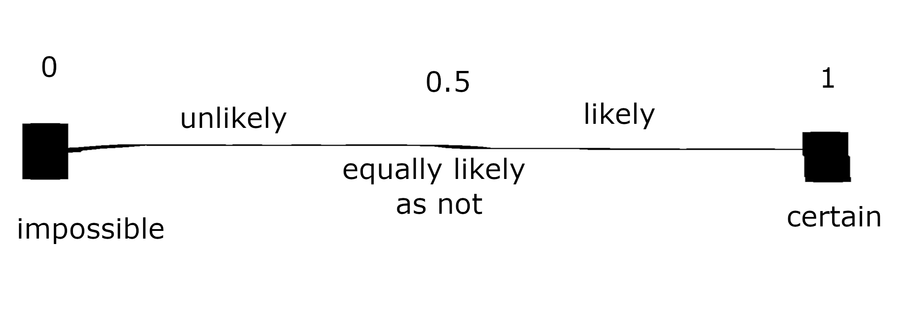
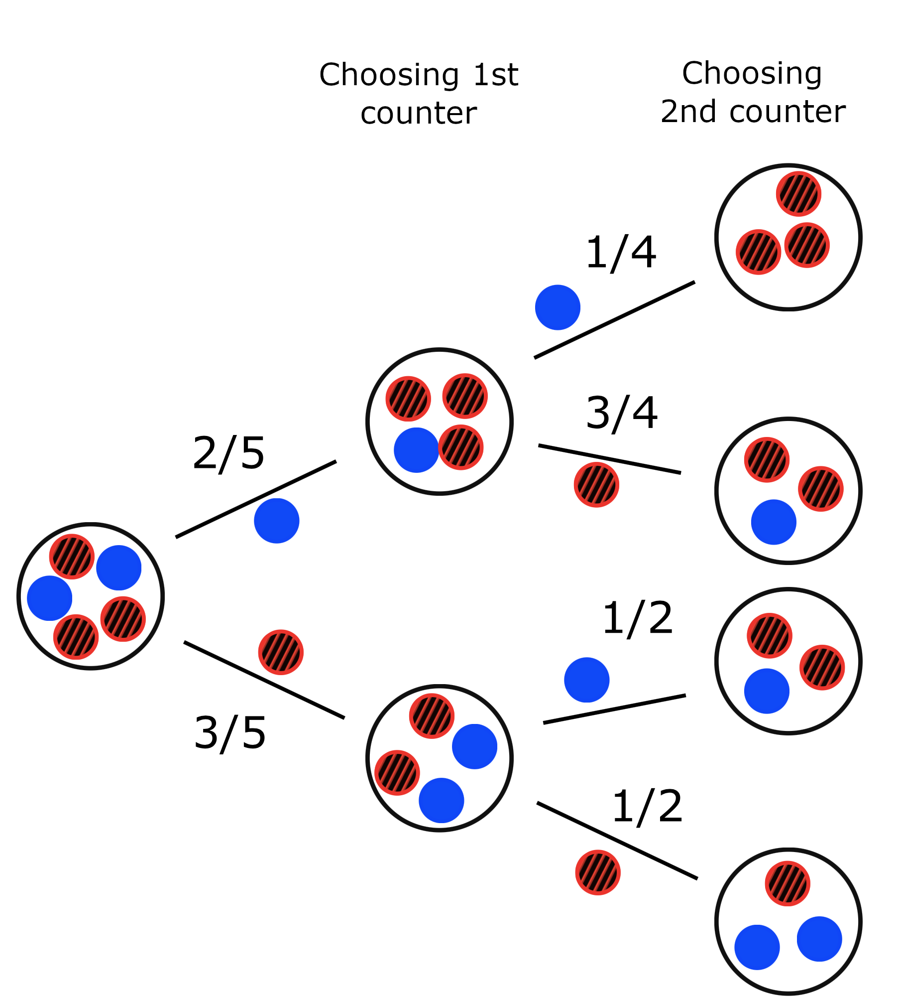
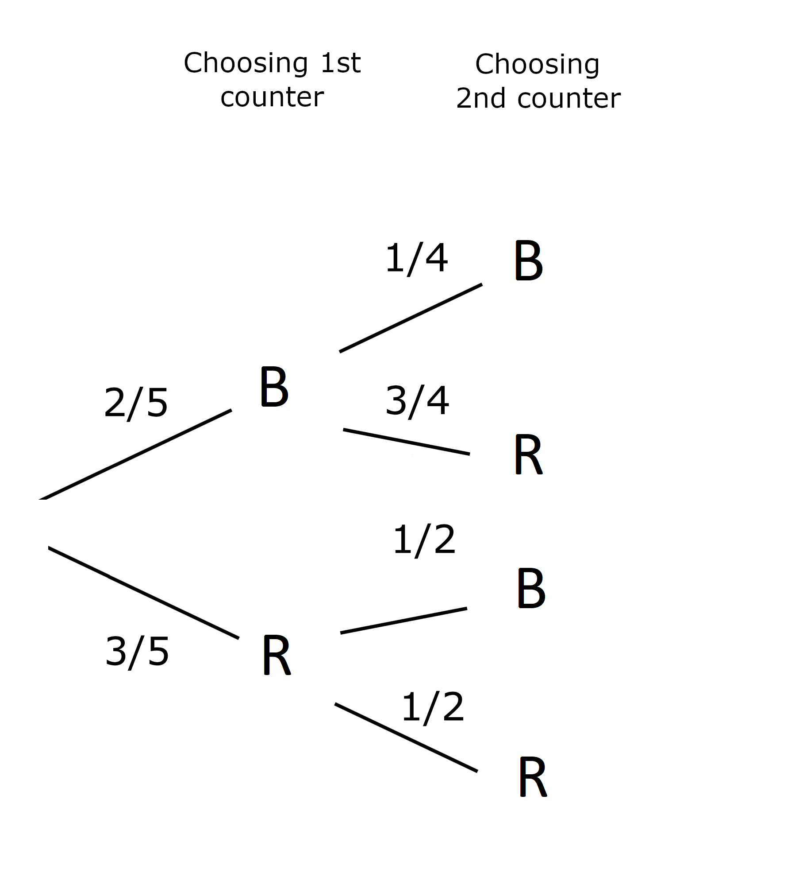

6 Probability
Probability is perhaps the area of maths closest to statistics, and looking at problems in one often motivates solutions in the other. That’s all a bit abstract though…
6.1 What is probability?
Probability is the study of chance. Given some event, its probability is a number between zero and one to how likely an event is to happen.
- If the probability is zero, the event is impossible;
- If the probability is one, the event is certain to happen.
The higher the probability, the more likely the event is to happen. If the probability is a half for example, the event is just as likely to happen as it is to not happen.

6.1.1 Notation
The “probability of event \(A\)” is usually expressed as \(\mathbb{P}(A)\). The probability of landing on heads if you toss a coin could therefore be expressed as \(\mathbb{P}(H)\), where \(H\) stands for “the coin landed on heads”.
If the event could have multiple outcomes, say the roll of a dice, then the notation is slightly different. If \(D\) rolling a six-sided dice, we say \(\mathbb{P}(D = 5)\) for the probability that the dice lands on a five.
6.1.2 Numerical representation
Probabilities lie between zero and one, but they can be expressed as:
- fractions, for instance \(\frac{1}{2}\),
- decimals, for instance \(0.5\),
- percentages, for instance \(50\%\),
- chances, for instance 1 in 2 chance,
- ratios1, for instance 1:1.
These equivalent expressions are often used interchangeably and can be used for any probability we wish to represent.
For example, there’s a one in six chance of rolling a five on a fair die. This is usually represented as \(\mathbb{P}(D = 5) = \frac{1}{6}\), but we could represent this as \(0.167\), \(16.7\%\), or \(1:5\) odds.
In this course, we usually express probabilities either as an exact value, usually in fraction form, or as a decimal number, rounded either using significant figures or decimal places.
6.2 Theoretical probability
To calculate the theoretical probability of an event, we need to know the sample space \(\Omega\) of an experiment.
The sample space is the set of all possible outcomes of an experiment. For example, the sample space for when we roll a die (the singular of dice) is the set of the six possible outcomes \(\lbrace 1,2,3,4,5,6 \rbrace\). In this case, all these outcomes are equally likely.

When each outcome of an experiment is equally likely, the probability of an event occurring can be calculated by dividing the number of favourable outcomes contained within the event by the total number of outcomes of the experiment.
What’s the probablity of rolling a 4?
There are 4 outcomes in the sample space \(\lbrace 1,2,3,4,5,6 \rbrace\). The event we wish to find is rolling a four, which is just one of six possible outcomes. So the probability of rolling a six is 1 divided by 6, or \(\frac{1}{6}\).
What’s the probability of rolling a number larger than 3?
To find the probability of rolling a number larger than 3 consider the number of outcomes that “satisfy” this requirement. The three outcomes are: rolling a \(4\), rolling a \(5\) or rolling a \(6\). There are still \(6\) possible outcomes in total and the probability of each is \(\frac16\), so the probability of rolling a number larger than \(3\) is given by \(\frac36\), which equals $ $.
6.2.1 Why is this theoretical?
Some probabilities like the ones we just looked at can be understood logically, using theory. In other cases, we cannot figure out the probability of an event using logic alone.
For example, if we wanted to know the probability that a woman from a particular population will be between 1.65 and 1.66 metres tall, we need to collect data, i.e. measure the heights of a large number of women in that population to see how many are between 1.65 and 1.66 metres tall, and use this to estimate the probability for the whole population.
We call such a probability an experimental probability.
6.2.2 Law of large numbers
Consider the graph below. On the horizontal axis, we have the number of times a fair six-sided dice was rolled. On the vertical axis we have value from 1 to 6. The graph represents the average of the results. As the number of times that you roll the die increases, the closer the average comes to the mean average between \(1\) and \(6\): \(3.5\).

This is called the Law of large numbers. In concrete terms, says that the proportion of the outcomes will approximate their theoretical probabilities as the number of trials increases.
If we throw a dice ten times, it is unlikely2 that all six possible outcomes will be equally represented in the outcome. But if you increase the number of times that you roll the dice, each outcome will be more and more equally represented. Set the number of dice to one and then use this Geogebra page to see how the outcomes even out as you throw the dice more often.
We’ll return to this example in this weeks workshops, looking at how the number of dice impacts the outcomes.
6.3 Sets and Venn diagrams
There are some more advanced concepts in probability that we need to cover, but before we can get to those we should probably take a quick detour to properly cover set notation. If this is a concept you’ve seen before, feel free to skip forwards!
6.3.1 Definition
Sets are mathematical objects that are, simply put, collections of elements. The are written with curly brackets. They are similar to lists, but lists are ordered and allow for repetition.
- Set of objects on the table: {keys, coffee cup, pen, …}
- Set of people in a room: {Joumana, Julie, Alistair, Yotam}
- Set of numbers strictly between one and nine: {x | 1 < x < 9}
The concept of a sample space in probability has an equivalent for sets more generally.
The universal set is the set of all objects and depends on the context. The universal set of all socks in the world, or the universal set of all students in the course.
6.3.2 Combining Sets
Sets on their own are mathematically interesting, and they can quite quickly lead to complicated ideas.[^You might have heard of Russell’s paradox, the set of sets that contain themselves. However of more interest is how they interact with each other.
- The union (denoted \(\cup\)) of two sets is the set of elements that are in either set.
- The intersection (denoted \(\cap\)) of two sets is the set of elements that are in both sets.
- The difference (denoted \(\backslash\)) of two sets is the set of elements that are in one set by not the other.
This is a way of abstractly defining familiar ideas.
Say \(A\) is the set of odd numbers between 10 and 20: {11,13,15,17,19}.3. Define \(B\) as the prime numbers between 0 and 15: {2,3,5,7,11,13}. The union of these two sets is \(A\cup B\) = {2,3,5,7,11,13,17,19}. The intersection of the two sets is: \(A\cap B\) = {11,13}.
These ideas aren’t just limited to numbers thought!
Consider the set of objects on the table, {keys, coffee cup, pen, calculator}, and the set of belongings I need to take with me: {keys, pen, wallet}.
The union of the two sets is {keys, coffee cup, pen, calculator, wallet}, while the intersection is {keys, pen}. The difference between the objects on the table and those I need to take with me is {wallet} - I wonder where I left it?
6.3.3 Venn diagrams
The place sets come up most frequently is in Venn diagrams.

A Venn diagram is a diagram style that shows the relation between sets, and was invented by English mathematician and logician John Venn in the 1880s. As the diagrams can be used to represent sets we can use them to represent probabilities for combinations of different events. The circles each represent one set. There can be any number of sets[^Though if we want circles, that limits us to three! Beyond that we have to introduce ellipses, sausages, and other squiggly constructs.]. The rectangle around them is the universal set, denoted \(\mathfrak{U}\).
A survey was done on first year students on what they felt made them like some animals more than others. \(42\)% of students responded saying they favoured an animal that was fluffy, while \(28\)% of students responded saying they favoured an animal that had big teeth. \(4\)% of students responded saying they favoured an animal with both of these characteristics.
We can use these data to estimate the probability that a student will favour an animal that is fluffy OR has big teeth, or is fluffy AND has big teeth. Below we see a Venn diagram of the probabilities that a student’s favourite animal will be fluffy, have big teeth, or be fluffy and have big teeth.

From this diagram you can see for instance that although \(28\%\) of students seem to prefer animals with big teeth, \(24\%\) students preferred them to have big teeth but NOT be fluffy.
With this squared away, we can return to probability proper and better understand some of its more complicated concepts.
6.4 Laws of probability
Probability is governed by laws which allow us to understand more complicated questions of chance. If we have more than one event, we need to start thinking about how to combine the events and their probabilities.
6.4.1 Compliment
In most probability frameworks, whether an event happens is binary: it either happens or it doesn’t happen. From this, we get a probability relation.
For an event \(A\), since \(\mathbb{P}(A) + \mathbb{P}(\text{not}~A) = 1\), \[ \mathbb{P}(\text{not}~A) = 1 - \mathbb{P}(A), \] where \(\text{not}~A\) is sometimes shortened to \(A'\), \(\overline{A}\), or \(A^{\text{c}}\).
Suppose that we roll a six-sided die. The universal set is the set of all possible outcomes: $ ={1,2,3,4,5,6} $. Let \(A\) be the event of rolling a number greater than \(2\).
The event \(A'\) is the event that we roll a number that is not greater than \(2\) (i.e. rolling a \(1\) or a \(2\)), so: \[ \mathbb{P}(A') = \mathbb{P}(\text{not greater than}~2) = \frac{2}{6}. \]
6.4.2 Combinations
Suppose we have two events called \(A\) and \(B\). The probabilities for “\(A\) and \(B\)” happening and “either \(A\) or \(B\) happening are related.
\[ \mathbb{P}(A\cup B) = \mathbb{P}(A) + \mathbb{P}(B) - \mathbb{P}(A \cap B). \]
Suppose that we roll a six-sided die. The universal set is the set of all possible outcomes: \(\mathfrak{U} = {1,2,3,4,5,6}\). Let \(A\) be the event of rolling a number greater than \(2\), and \(B\) rolling an even number.
The event \(A \cap B\) is therefore the event that we roll a number that is both even and greater than \(2\) (i.e. rolling a \(4\) or a \(6\)). The event \(A \cup B\) is the event that we roll a number that is either greater than \(2\), even or both greater than \(2\) and even (i.e. rolling a \(2, 3, 4, 5\) or \(6\)).
From this: - \(\mathbb{P}(A \cap B) = \mathbb{P}(\text{greater than}~2~\text{and even}) =\frac{2}{6}\) - \(\mathbb{P}(A \cup B) = \mathbb{P}(\text{greater than}~2, \text{even, or both}) = \frac{5}{6}\)
6.4.3 Independence
Two events, \(A\) and \(B\), are independent of one another if the probability that one of the events happens is unaffected by whether or not the other one happens. The events are dependent on one another if they are not independent of each other.
In the experiment of rolling two dice, the outcome of each dice is not influenced by the outcome of the other dice. This means that each outcome is independent from each other.
The event of me taking my umbrella in the morning is influenced by whether or not it is raining. If it is not raining, the probability that I will take an umbrella is smaller than when it is raining. The two events are therefore not independent, i.e. dependent.
If two events are independent, then we have the following rule.
If \(A\) and \(B\) are independent events, \(\mathbb{P}(A\cap B) = \mathbb{P}(A)\mathbb{P}(B)\).
6.4.4 Mutually exclusive
We say that two events are mutually exclusive if they cannot both happen at the same time. For example, we cannot roll both an even and an odd number on a single die, and so the events ‘rolling an odd number’ and ‘rolling an even number’ are mutually exclusive.
We express the mutual exclusion of two events \(A\), \(B\) mathematically as \(\mathbb{P}(A\cap B) = 0\).
6.4.5 Conditional probability
We are often interested in the probability that event \(A\) happens given we know some event \(B\) has happened, denoted \(\mathbb{P}(A|B)\).
The probability of \(A\) happening given \(B\) has happened is \[ \mathbb{P}(A|B) = \frac{\mathbb{P}(A\cap B)}{\mathbb{P}(B)}. \]
Conditional probabilities themselves are related through Bayes’ Theorem:
The probability of \(A\) happening given \(B\) has happened can be expressed as \[ \mathbb{P}(A|B) = \frac{\mathbb{P}(B|A)\mathbb{P}(A)}{\mathbb{P}(B)}. \]
These are algebraic formulae for working with probabilities, though that’s not the only way to go about it.
6.5 Tree diagrams
Visualisation can be very helpful in understanding probability. We’ve already looked at Venn diagrams so now we’ll turn to trees.

Tree diagrams, also known as probability trees, are particularly useful when there are several events (not necessarily sequential). They are very useful when investigating dependent probabilities.
Nodes (black circles above) represent outcomes or series of outcomes, while edges (the lines between them) represent steps that move from one outcome to another.
Suppose we a bag containing five counters, of which two are blue and three are red. We randomly choose two counters from the bag, one after the other without replacing the first one in the bag. The possible outcomes are:
- choosing either two red counters,
- two blue counters, or
- one of each.
In order to calculate these probabilities it is useful to draw a probability tree. In this, we should consider the possible outcomes of drawing the first counter; and then the outcomes of drawing the second counter (given the counter we picked in our first draw) and the associated probabilities of these different events. ‘Event one’ is drawing the first counter and ‘event two’ is drawing the second counter.
For this example we obtain the following probability tree, where the circle on the far left-hand side represents the initial state of the experiment; three red counters and two blue counters in the bag.

The two branches of the tree leaving the initial circle represent the two outcomes of the first part of our experiment, where we pick one counter out of the bag. The event ‘picking a blue counter’ is represented by the top branch, and the probability of this happening, \(\frac{2}{5}\), is shown next to the branch (there are two blue counters out of a total of five counters). The event ‘picking a red counter’ is represented by the lower branch, and the probability of this happening, \(\frac{3}{5}\), is shown next to this branch. Both branches lead to new circles, which represent the state of the experiment after one counter is drawn from the bag at random.
Each of the two new states have two branches emerging from them. Each branch represents the outcome of having picked either a blue or a red counter on the second turn, and the probability of each outcome is shown next to the branch. The four circles on the far right-hand side of the tree represent the final states of the experiment.
Usually a probability tree is simplified, without such explicit drawings of the practical situation.

Each path through the tree represents a unique outcome of the experiment. Each path corresponds to independent events. Hence, the probability of each outcome along a given path is calculated by multiplying together the probabilities on each branch of the given path.
For instance, the probability of picking two blue counters is \[ \mathbb{P}(BB) = \frac{2}{5} \times \frac{1}{4} = \frac{1}{10}. \]
These events (paths) are mutually exclusive, and so the probability of one or the other happening is found by adding the probabilities corresponding to the individual paths. For instance, the probability of picking a red counter on the second go is \[ \mathbb{P}(\text{red on 2nd go}) = \frac{2}{5} \times \frac{3}{4} + \frac{3}{5} \times \frac{1}{2} =\frac{3}{5}. \]